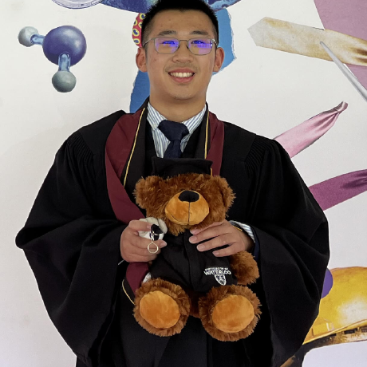

Ziyu (Colby) Wang
PhD Student in Computer Science at Toronto Metropolitan University.
My research interests span reinforcement learning, automated planning, machine learning, AI for decision making, and large language models. I am particularly interested in building reliable learning and reasoning systems for sequential decision-making and knowledge-intensive tasks.

Research Interests
Selected Publications
Master's Thesis
Numerical Faithfulness and Failure Modes in Financial RAG Systems
Toronto Metropolitan University, 2026. Research on numerical faithfulness, failure modes, retrieval-augmented generation, and lightweight verification for financial question answering.
About
Current
PhD Student in Computer Science at Toronto Metropolitan University.
Research Focus
Learning, reasoning, planning, and trustworthy AI systems for decision-making.
Contact
Get in touch
Email: c12wang@torontomu.ca
Toronto Metropolitan University